Two ways of putting dielectric elastomer actuators in a bat-inspired wing, on the same wing size, stroke and voltage, from one analytical model.
Update, 6 Nov 2026, 13:15: the full robot flaps. New First flapping page: resonance 8.7 Hz (damping ratio 0.07), 24° stroke at 1200 V, about 20 % more stroke with the wing powered, and the force lag seen again.
Update, 6 Nov 2026, 05:14: new Wing in air page. In flow the active skin alone changes lift ($\Delta C_L$ +0.1 to +0.35, settles), a slack edge has no steady state, discrete fibres do less, and the DEA force lags the voltage by about 50 ms, so voltage is a slow trim.
Update, 5 Nov 2026, 22:33: new Results and B-cube robot pages. The wing moves because its rolled edge goes slack; a passive edge does nothing; the lift change can be either sign; free flight needs about 2 J/kg per cycle from the cores, a tethered robot does not.
These are model predictions. The full membrane has not been built, and $\eta$ of a flat sheet is estimated (0.5), not measured.
Plagiopatagiales: discrete DEAs
Rolled actuators in a passive silicone membrane.
Full membrane
The whole skin is the actuator, two active layers, with its own rolled edge as the fibre. Cut tilted, and tensioned by bringing the root edge and batten to vertical.
Result
Mean lift change at 1.6 kV, one wing, 2 Hz, 6° pitch
3 m/s
4 m/s
6 m/s*
Full membrane, tilted cut, active fibre, $\eta$ = 0.5
5.5 mN
14.5 mN
40.8 mN
Discrete DEAs, $T_c$ = 0.5 N, $\lambda_{pre}$ = 1.03
0.5 mN
1.8 mN
14.3 mN
Discrete DEAs, free trailing edge, as tested
0
0
0
Baseline lift about 20 mN (full) and 16 mN (discrete) per wing at 4 m/s. *The model over-predicts at 6 m/s. For comparison, the finite elements on the full membrane at a fixed 6° give 7.6, 14.5 and 19.0 mN (the 3 m/s state did not fully settle).
Your tested wings: weak results are expected. With a free trailing edge, statics leave no way for voltage to change chord tension.
Full against discrete at $\lambda_{pre}$ = 1.03: about 8× at 4 m/s, narrowing with speed. On the real 12 × 7 cm wing with a nylon line it is 2–3×: below.
The trailing-edge fibre is active in these numbers. It needs a wide roll with a narrow active band, so it keeps its force at voltage: the equations. It adds no lift: a passive fibre on the same outline gives 15.7 mN against 14.5 mN in the finite elements.
But a slack discrete wing may do as well. Lowering $\lambda_{pre}$ raises its lift change to 7.5 mN at 1.01 and 12.7 mN at 1.00, close to the full membrane. Those are outside what the model has been checked on, and a slack membrane may flutter. See pre-stretch.
Against what has been measured
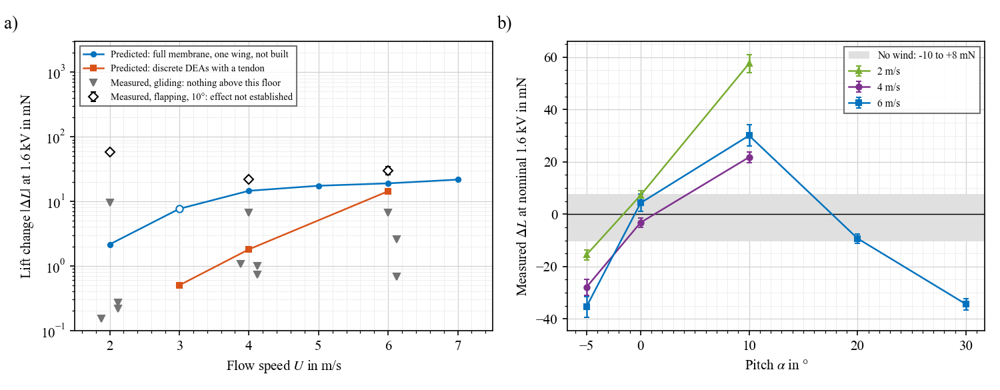
4 m/s, 1.6 kV
Lift change
In %
Status
Full membrane, one wing
14.5 mN (15.7 mN passive)
+78 % (+84 %)
Predicted, not built
Discrete DEAs, gliding, free trailing edge
0.2 mN or less; floors 0.7–6.7 mN
about 1 % or less
Measured: nothing detected, in all 4 campaigns
Discrete DEAs, flapping, 10°, cycle mean against 0 V
Equation: $\Delta L=\Delta C_L\,qS$, with $q=\tfrac12\rho U^2$. The wings differ in area, so compare trends and percentages, not millinewtons alone.
Trend: gliding wings show no lift change, as the load-path finding expects with a free trailing edge. Flapping shows a change that follows pitch, with the sign flipping between −5° and 10°, but it is one wing in one ascending voltage sweep.
Why flapping is not established: a linear drift fits the dose curves as well as the bench shape, and in the pulsed runs lift in the voltage-off windows moved about as much as in the on windows (+23.2 against +21.8 mN at 4 m/s, 10°). Zero drift reached 0.3 N, and with no wind the same analysis gives −10 to +8 mN. The voltage monitor clips above 1.1 kV, so 1.6 kV is nominal.
Validate: flapping tests are paused. The full membrane wing comes next, bench first, then gliding with randomised voltage order and a sham. Error bars are the standard error over cycles, so they do not include drift.
All results in %
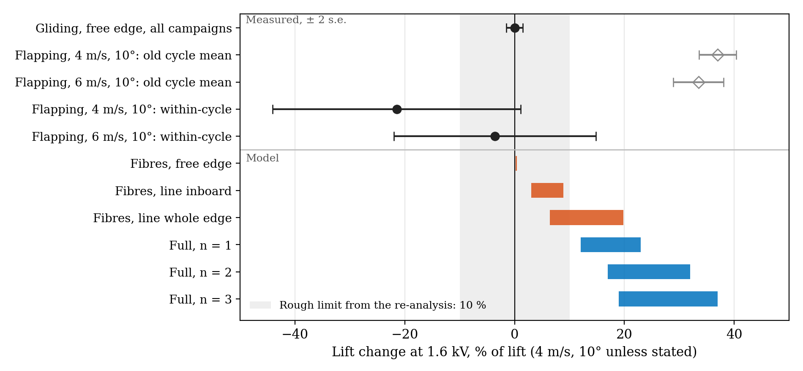
Equation: $\Delta L / |L|$, lift change at 1.6 kV over lift. In mN: measured and re-analysed.
Trend: nothing measured clearly differs from zero once time or drift is accounted for, but the errors still include the old value. Fibres with a free edge should do nothing, and the model's full membrane sits furthest to the right.
Validate: the model bars are not measurements. If a full membrane wing gets near them, it would be the first clear effect: randomised voltage order, with a sham.
Nylon line and flapping re-analysis
3 Nov 2026. The FAAV wing was not a free-edge wing: a nylon line ran from the trailing edge at the root to the body. Each wing is 12 × 7 cm (84 cm²), measured at 10° and 1 Hz, and both wings carried DEAs, so measured lift covers both. The earlier comparison with about 2 mN was for a 33 cm² wing at 6°, so it was wrong.
Nylon line: model, one wing
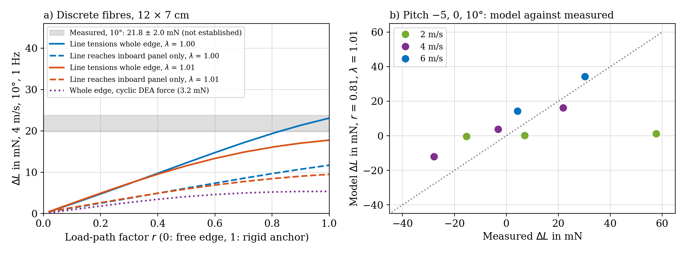
Equation: $\Delta n = r\,\Delta F / s$, with $r = k_a/(k_a+k_d)$ and $k_a = 8 T_c s / L_s^2$. The line sets $T_c$. Lift then follows from the one-cubic model.
Trend: free edge 0.5 mN (0.4 %); line reaching the inboard panel only 3–12 mN (3–11 %); line along the whole edge 5–23 mN (6–26 %). $T_c$ = 0.1 N gives $r$ = 0.50, and 0.5 N gives 0.83.
Validate: $r$ and $\lambda$ were chosen, and the line force was never measured. Flapping tests are paused, so this stays untested. If they resume: measure the line force, then run the same wing with the line slack and tight, about 30× in the model. The old result was 10.9 mN per wing, and the next plot does not support it. The right panel is for both wings.
Within-cycle contrast
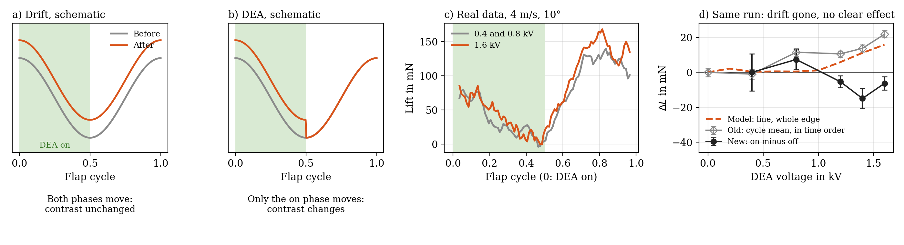
The intuition: drift lifts the whole cycle, so on minus off does not change. A DEA can only move the phase where it is on. Code: intuition_figures.py.
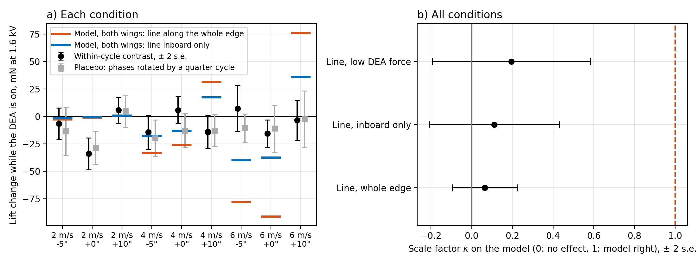
Equation: per cycle $C = \bar L_{on} - \bar L_{off}$, using phases 0.05–0.45 and 0.55–0.95 from the DEA's rising edge. Then $C = c_0 + a\,s(V)$, with $s$ the bench force drop and $a$ the lift change caused while the DEA is on. Slow drift is common to both phases, so it cancels. Code: recalibrate_contrast.py, numbers: contrast_attached.csv.
Trend: 4 m/s, 10°: −14 ± 7 mN (−22 %), where the cycle mean gave +21.8 mN (+37 %). 6 m/s, 10°: −4 ± 9 mN (−4 %), where it gave +30 mN (+34 %). Over all attached-flow conditions the scale on the model, for both wings, is $\kappa$ = 0.06 ± 0.08 for a line along the whole edge. So there is no clear fast effect, with a rough limit of about 10 % of lift at 4 m/s, 10°. This says nothing about a lasting effect. A negative value does not mean the DEA lowers lift: the off phase rose more than the on phase, and the placebo is just as negative.
Validate: phases rotated by a quarter cycle give values just as large, so the real error per condition is about twice the one shown, near 14 mN. The test cannot see a slow, constant shift, and it assumes the DEA relaxes within the off phase, as on the bench. Voltage above 1.1 kV is nominal, and the current monitor cannot show that the fibres were alive. Flapping tests are paused, so this stays inconclusive. If they resume: alternate 0 and 1.6 kV for about 60 cycles each, about 2 minutes per condition, for an error near 2 mN, with a sham.
Old cycle mean and the tare
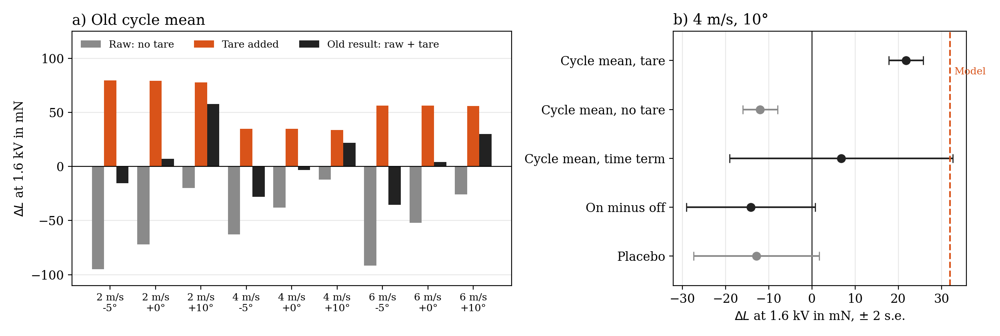
Equation: old result = raw change + change in the wind-off tare between the 0 V and 1.6 kV windows. With a time term: $L = c + d\,t + a\,(V/1.6\,\mathrm{kV})^2$ per cycle. Code: cycle_mean_check.py, numbers: cycle_mean_check.csv.
Trend: the cycle mean is the right quantity, because it sees lasting effects too. But the tare sets its sign: at 4 m/s, 10° the raw change is −12 mN, the tare adds +34 mN, and the result is +22 mN. Time and voltage are almost the same variable ($r$ = 0.98), so with a time term it becomes +7 ± 13 mN (+11 ± 22 %).
Validate: not settled either way. For a real effect: with wind $|L|$ grows and with no wind it does not (signed, +9.8 ± 1.0 against +0.3 ± 0.9 mN), and lift does not keep growing inside constant-voltage windows. Against: the tare, and +57.6 mN at 2 m/s, where the air load is a quarter of that at 4 m/s. The ± 2.0 mN is cycle scatter only, and leaves out the tare.
Sign flip between −5° and 10°
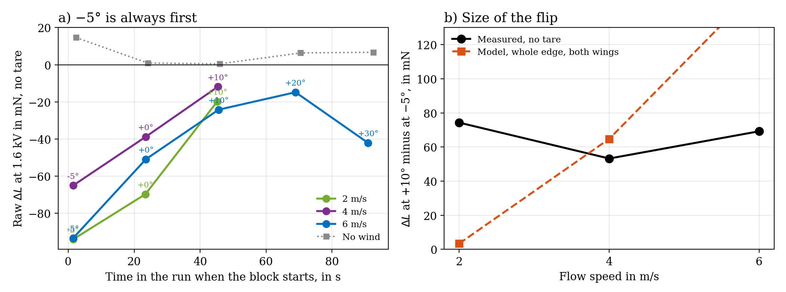
Equation: $L = F_z\cos\alpha - F_x\sin\alpha$. The difference $\Delta L_{+10°} - \Delta L_{-5°}$ in one run cancels a zero shift common to the run. Code: sign_flip_check.py, numbers: sign_flip_check.csv.
Trend: the flip rules out a uniform zero shift and $F_x$ drift: it is all in $F_z$, and it does not need the tare (74, 53, 69 mN at 2, 4, 6 m/s). But −5° is always recorded first and 10° later (correlation 0.98), and the raw change shrinks with time in each wind run, so a zero that settles after wind-on gives the same flip. The flip also does not grow with speed, while the air load grows 9×.
Validate: leans to time order, not proven. Decisive and short if flapping resumes: the same run with 10° first and −5° last. If the sign follows pitch, it is real; if it follows order, it is the zero.
All conditions, both wings
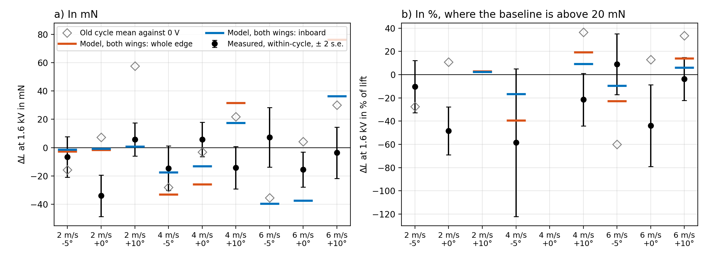
1.6 kV, 1 Hz
Baseline, measured / model
Old cycle mean
Within-cycle
Placebo
Model, whole edge, both wings
Model, inboard, both wings
2 m/s, −5°
−64 / −15 mN
−16 mN (−27 %)
−7 ± 7 mN (−10 %)
−14 mN
−3 mN
−1 mN
2 m/s, 0°
−70 / 0 mN
+7 mN (+11 %)
−34 ± 7 mN (−48 %)
−29 mN
−2 mN
−1 mN
2 m/s, 10°
0 / 30 mN
+58 mN
+6 ± 6 mN
+5 mN
+1 mN
+1 mN
4 m/s, −5°
−25 / −84 mN
−28 mN
−15 ± 8 mN (−58 %)
−20 mN
−33 mN (−39 %)
−17 mN (−17 %)
4 m/s, 0°
−10 / 0 mN
−3 mN
+6 ± 6 mN
−13 mN
−26 mN
−13 mN
4 m/s, 10°
66 / 163 mN
+22 mN (+37 %)
−14 ± 7 mN (−22 %)
−13 mN
+32 mN (+19 %)
+18 mN (+9 %)
6 m/s, −5°
−81 / −341 mN
−35 mN (−60 %)
+7 ± 11 mN (+9 %)
−11 mN
−78 mN (−23 %)
−40 mN (−10 %)
6 m/s, 0°
−35 / 0 mN
+4 mN (+13 %)
−16 ± 6 mN (−44 %)
−11 mN
−91 mN
−37 mN
6 m/s, 10°
98 / 539 mN
+30 mN (+34 %)
−4 ± 9 mN (−4 %)
−2 mN
+76 mN (+14 %)
+36 mN (+6 %)
Equation: measured % = $\Delta L / |L|$, with $L$ the cycle-mean lift at low voltage; model % uses its own 0 V lift. % is left out under 20 mN, where it means little. Numbers: lift_table_percent.csv.
Trend: model and data disagree on sign and size. The model's large values at 6 m/s are excluded. The largest within-cycle values have placebos of the same size, so none is a clear effect.
Validate: the model also misses the baseline: 0 mN at 0° against −10 to −70 mN measured, and 539 against 98 mN at 6 m/s, 10°, for both wings. So it is not validated on this wing.
Full membrane, same wing: model, one wing
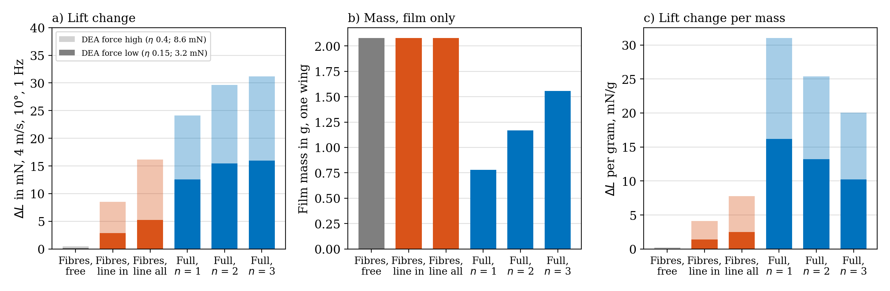
Equation: full sheet $\Delta n = P = \eta\,n\,\varepsilon_0\varepsilon_r V^2/H$. Film mass $m = \rho\,A\,(n+1)H$, plus the edge strip. Code: faav_vs_full_figures.py.
Trend: $\Delta L$ = 13–24, 15–30, 16–31 mN (12–23, 17–32, 19–37 %) for $n$ = 1, 2, 3, against 3–8 mN (3–9 %) with the line inboard and 5–16 mN (6–20 %) along the whole edge. Film 0.78, 1.17, 1.56 g against 2.08 g. At $n$ = 2: 2–3× a whole-edge line, 3–5× per gram, 44 % lighter. Layers saturate, so $n$ = 1 is best per gram.
Validate: for a fast effect the re-analysis puts the model too high for fibres ($\kappa$ below about 0.22), so it may be too high here too. Film only, with no electrodes, rods or glue, and a 180 µm membrane assumed. $C_{L0}$ is above 0.9, so treat these as upper bounds. Weigh real wings, and measure $\eta$ and tension first.
Over the stroke
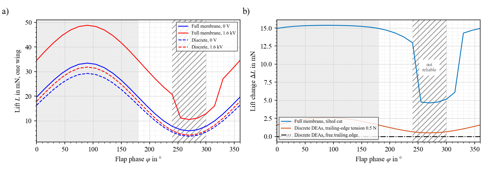
Equation:step 6 at each phase, with $\alpha_{eff}=\alpha-\arctan(\Omega r/U)$ and $q_{eff}=\tfrac12\rho(U^2+\Omega^2r^2)$ at each panel's radius.
Trend: a discrete wing changes lift most in the downstroke (2.6 mN) and least in the upstroke (0.5 mN), because its camber follows the load. The full membrane stays near 15 mN, because voltage removes most of its chord tension whatever the load.
Hatched, 240° to 300°, not reliable: the outer panel's angle crosses zero, and it can flip to either side. Left out of the means. Raising the pitch to 8° avoids it, in the finite elements too: why, and how.
Validate: high-speed video and force over a cycle, 0 V and 1.6 kV, same wing. Look for a flat lift change against phase on the full membrane, and for snap-through near 270°.
With speed
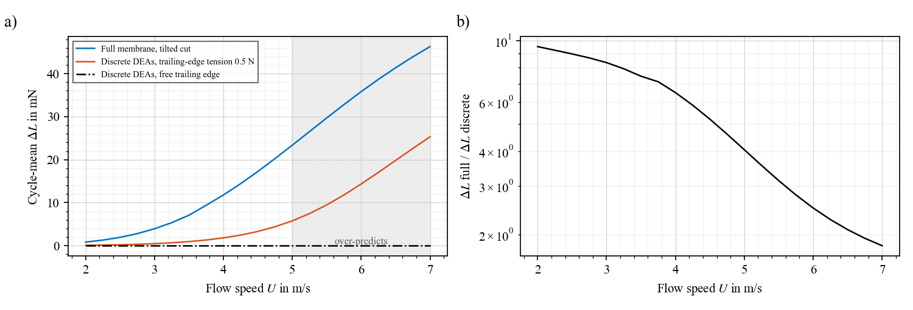
Equation:step 6, where softening $D$ grows with $q$.
Trend: the discrete wing needs high $q$ to act, because its tension stays high: $T$ falls by only 25 % at voltage. The full membrane loses most of its chord tension, so it responds at low speed. The ratio falls from about 12× at 3 m/s to 8× at 4 m/s and 2.8× at 6 m/s.
Validate: static section in the tunnel, 3, 4, 5, 6 m/s, randomised, with a sham. Above 5 m/s (shaded) the model over-predicts: 1.7× on a rigid-edge discrete wing and about 2× on the full membrane at 6 m/s.
With actuator efficiency
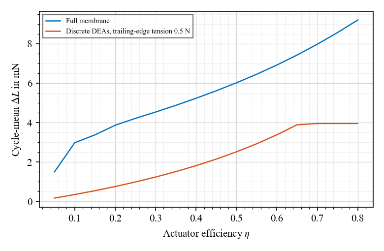
Equation: $P=\eta\chi\varepsilon_0\varepsilon_r(V/H)^2(H+H_p)$ (step 3c); for discrete DEAs, $\Delta F\propto\eta$.
Trend: full membrane 4.8, 8.9, 12.7, 18.7 mN at $\eta$ = 0.15, 0.24, 0.40, 0.70 (finite elements at 6°: 10.4 at 0.40, 14.5 at 0.50, 20.7 at 0.70). Discrete 0.5, 0.9, 1.8, 4.0 mN. The sheet is estimated at 0.5, higher than a roll because it has no rolled air gaps.
Validate: flat strip of the real stack on the texture analyser, isometric, held at 1.6 kV. This is the cheapest and most useful next measurement.